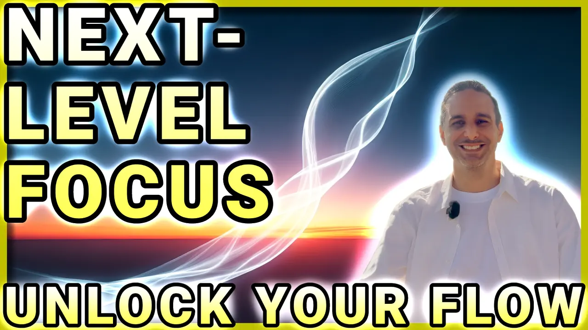
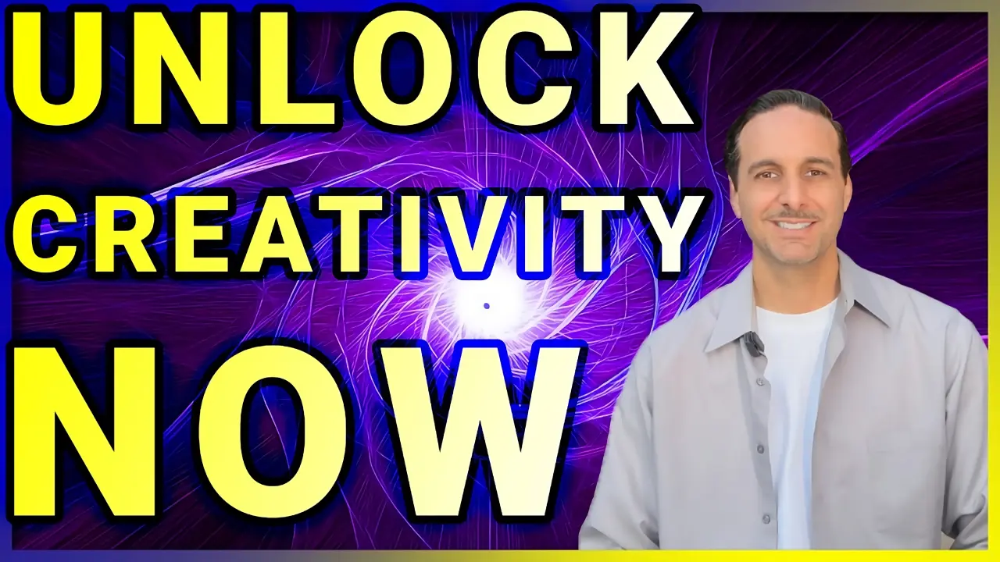
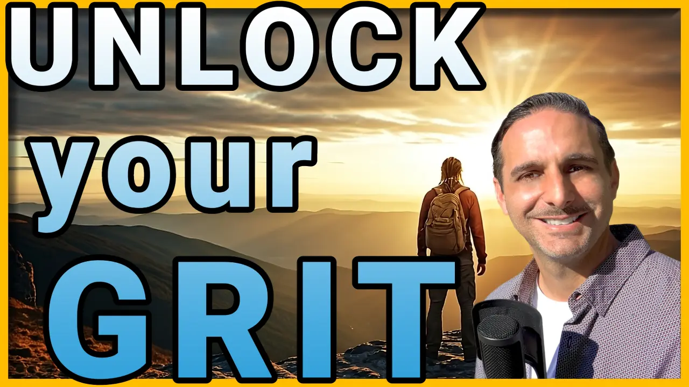
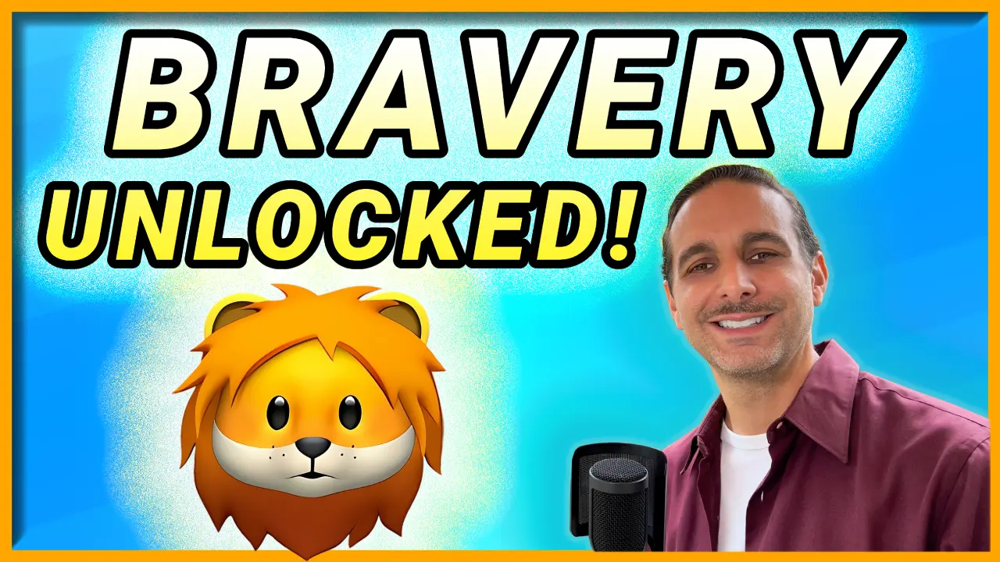
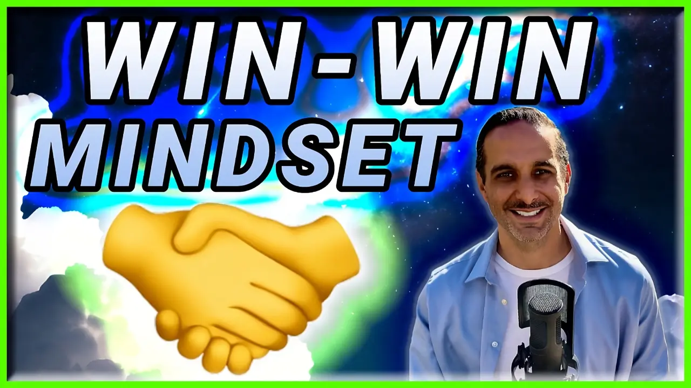
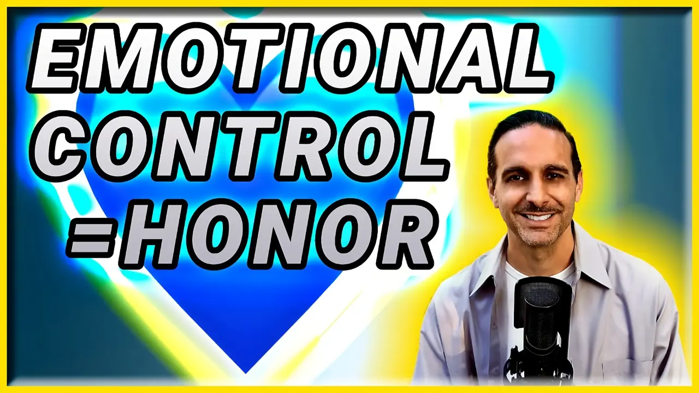
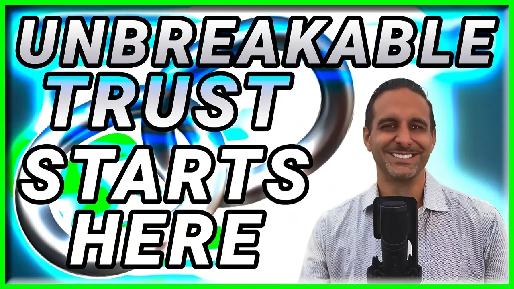

Mastering Life: Trust, Passion, and Dedication
-

🏄♂️ How to Enter Flow State & Unlock Peak Performance Instantly!
14/25 Have you ever been so absorbed in an activity that time seemed to vanish? That’s the power of Flow, a scientifically proven state where focus, creativity, and performance skyrocket. In this episode, we’ll dive deep into how to achieve and sustain Flow, unlocking your ability to work smarter, create effortlessly, and perform at your highest level.
-

Unlock Creative Breakthroughs: Crush Mental Blocks and Thrive Today
13/25 Discover proven strategies, inspiring stories, and science-backed methods to unleash your creative potential. Learn from James Cameron's The Terminator, Paul McCartney's Yesterday, and insights from The Creative Act by Rick Rubin and The Extended Mind by Annie Murphy Paul.
-

Grit Unlocked: The Secret to Pushing Through Any Challenge
12/25 Learn how passion and perseverance can transform challenges into triumphs. Discover grit-building strategies inspired by Emma Gatewood's Appalachian Trail hike, David Goggins' "40% Rule," and Carol Dweck's growth mindset research. Learn to adapt, persist, and succeed against the odds.
-
Unlock Resilience: How to Turn Setbacks → Strength | Never Give Up
11/25 Explore resilience—the ability to adapt, endure, and thrive through challenges. Uncovers the science of neuroplasticity and emotional regulation. Inspiring stories from Nick Vujicic, Harriet Tubman, and Stephen Hawking. Gain tools from Brené Brown's Rising Strong and Stephen Joseph's What Doesn't Kill Us.
-
 The Secrets to Staying Dedicated: Build Habits That Guarantee Success
The Secrets to Staying Dedicated: Build Habits That Guarantee Success
10/25 Master the art of persistence and turn dreams into habits that lead to success. From Diana Nyad's historic swim to Bethany Hamilton's triumph over adversity, learn practical strategies backed by science to stay motivated, overcome obstacles, and achieve your long-term goals.
-

The Secret to Bravery: Following Your Heart Honestly Without Fear
9/25 Bravery isn't the absence of fear—it's taking action despite it. Learn how to face fears, make tough decisions, and align with your values. Understand the brain's role in courage, and discover how mindfulness can rewire emotional responses to live authentically.
-

Master the Art of Collaboration: Win Every Argument with Honor
8/25 Discover how adopting a win-win mindset transforms conflicts into opportunities for growth. By focusing on shared interests, emotional intelligence, and creative problem-solving, learn to build trust, foster respect, and achieve mutually beneficial outcomes in personal and professional interactions.
-

Unlocking Emotional Control: The Secret to True Honor and Trust
7/25 Uncover the transformative power of emotional control to navigate life with honor and trust. Learn how managing emotions strengthens relationships and builds resilience. Get practical tools for mastering emotional responses and fostering meaningful connections.
-

Why Honoring Your Word is the Secret to Unbreakable Trust
6/25 Explore the power of honoring your commitments and staying true to your word. Discover how integrity and reliability foster trust and create lasting relationships. Through inspiring stories and actionable steps, this episode shows how credibility can elevate both personal and professional success.
-
Integrity Matters: Unlock the Secret to Staying True to Yourself
5/25 Integrity is the foundation of character and success. This episode dives into how staying true to your principles strengthens relationships, builds trust, and inspires others. Learn from real-world examples and practical advice to align your actions with your core values and live authentically.
-
 Unlock the Power of Everyday Kindness: Transform Lives Today!
Unlock the Power of Everyday Kindness: Transform Lives Today!
4/25 Kindness has the power to transform lives, and it starts with simple, everyday acts. Explore the ripple effect of compassion and how small gestures can make a big impact. This episode shares heartwarming stories and easy ways to incorporate kindness into your daily routine.
-
 Build Inner Confidence: Unlock the Secrets to Trustworthiness
Build Inner Confidence: Unlock the Secrets to Trustworthiness
3/25 Trust begins within. Learn how cultivating self-trust and confidence radiates outward, creating stronger relationships and deeper connections. This episode highlights the importance of aligning actions with values and provides actionable steps for becoming a more trustworthy individual.
-
 How Small Acts of Kindness Create Big Change | Ripple Effect
How Small Acts of Kindness Create Big Change | Ripple Effect
2/25 One act of kindness can change the world. This episode explores how generosity and compassion can inspire others and create a positive ripple effect. Discover practical ways to spread kindness in your community and beyond.
-
 Unlock Your True Potential: Master "Temet Nosce" for Personal Growth
Unlock Your True Potential: Master "Temet Nosce" for Personal Growth
1/25 Self-awareness is the key to personal growth. Dive into the ancient principle of "Know Thyself" and uncover how understanding your values, strengths, and purpose can transform your life. This episode combines timeless wisdom with practical strategies to help you unlock your true potential.
All About 𝗗𝗢 𝗜𝗧 𝗔𝗟𝗟
-
Welcome to "Do It All" – Your Hub for Creativity, Knowledge, and Growth!
Welcome to my first episode on DO IT ALL! I'm Gabriel, and in this episode, you'll get to know who I am, the values I stand by, and what you can expect from this channel.